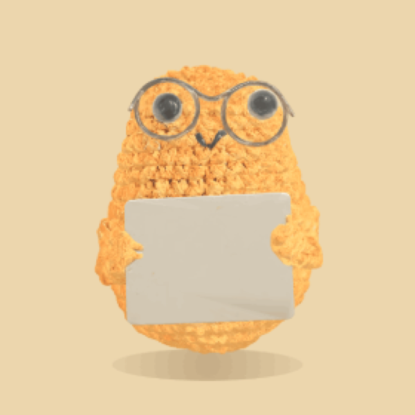

a crocheted potato for your screen
A hand-crocheted potato who lives in the corner of your screen — watches your cursor, plays by itself, and holds up a little card of encouragement.
Free · macOS 12+ · works offline

No windows, no notifications, no nagging. Just a little friend getting on with its day in the corner of yours.
Tap for a reaction — squish, hop, wobble, a sudden sneeze — and every so often a whole little skit. It never repeats the same line twice.
A quiet needs-driven brain ticks in the background. Bored, it entertains itself; sleepy, it dozes off; missing you, it knocks to say hi.
Eyes lead, the head follows. It blinks, glances around, and looks right at you — then drifts back to daydreaming when you wander off.
Fling it sideways and it spins with real momentum, then springs upright. Nudge it to a screen edge and it curls up for a nap.
Tap the little card in his hands and a fresh line appears — painted right onto the card he holds, never a speech bubble. Pull as many as you like; the good ones don't run out.
Your first pull each day comes back a rare Golden Stitch — usually a famous line it's been saving up for you, and every so often, once it knows you well enough, one it wove itself from the things you've actually talked about.
Hover over Spuddy to open a little chat and tell it how the day went. It replies in character, keeps it to a warm line or two, and weaves what matters back into your golden cards later.
It's not a therapist — if you're really struggling, it'll gently point you toward a human you trust.
Each has its own voice and its own way in. Once a friend, always a friend.